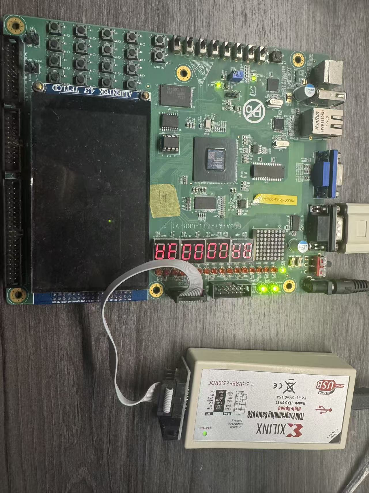

Overview
This project is a reproducible FPGA implementation of a dual-issue LoongArch32 CPU. The current RTL includes branch prediction, register renaming, a physical register file, two reservation stations, a 32-entry reorder buffer, cache/memory translation, and an AXI memory interface.
Usage and reproduction
- Use Windows with Vivado 2023.2 and the target FPGA board connected through JTAG.
- Open PowerShell in
fpga/nscscc-team/run_vivado. - Set the Vivado architecture environment variable before running batch scripts:
$env:PROCESSOR_ARCHITECTURE = 'AMD64'Run the functional board test:
& 'C:\Xilinx\Vivado\2023.2\bin\vivado.bat' -mode batch `
-log board_func.log -source codex_vio_func.tclExpected result: 3a00003a, corresponding to the functional 3A result.
Run the 20-benchmark performance test:
& 'C:\Xilinx\Vivado\2023.2\bin\vivado.bat' -mode batch `
-log board_perf.log -source codex_vio_perf.tcl
The script tests switches 7E through 6B and writes one result per
benchmark to perf_vio.csv. A successful run has 20 rows, every
correct_flag=1, and non-zero SoC/CPU counters.
Verified results
Physical FPGA board evidence
The functional test photo shows the board displaying 3A 00 00 3A.
The standalone repository also contains all forty performance-test photos: each
N-red.jpg marks progress at item N, while N.jpg is the matching score photo.

Open the complete board-test photo index and performance gallery.
Source layout
The complete source, FPGA scripts, software examples, bitstreams, simulation assets,
and verification reports are preserved in the standalone
hz-cao/cpu-kernel repository.
The main reproduction notes are available in
README_SUBMISSION.md and the
verification summary is available in
reports/verification_summary.md.